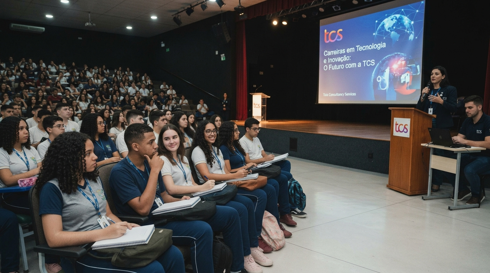
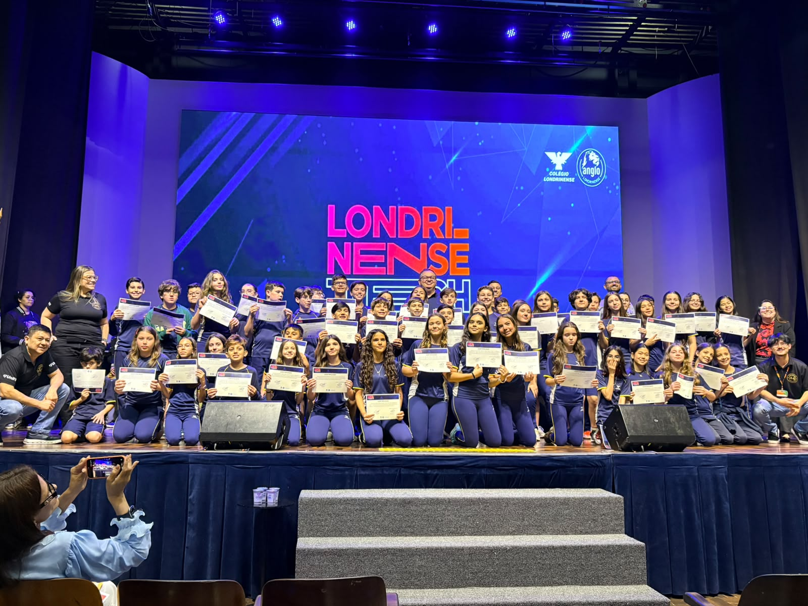

Eventos de que participei na escola

Participei da Semana da Tecnologia na minha escola, um evento organizado por um grupo de alunos, com apresentações ao longo de uma semana. Entre elas, representantes de instituições de ensino superior, como Positivo e UniFil, falaram sobre seus cursos para os alunos do ensino médio.

Recebemos profissionais da TCS, que fizeram uma palestra sobre a empresa e as oportunidades na área de tecnologia, no auditório da UEL. Nesse dia, a universidade disponibilizou o espaço para a realização do evento.
Eventos de que participei na faculdade

Tive a oportunidade de participar da pré-incubadora da UniFil com alguns colegas, com uma ideia desenvolvida durante o Ideathon GreenTech 2026. Ao final dessa etapa, minha equipe e eu participamos da formatura e fizemos uma breve apresentação da nossa startup.

No dia 09/11/2026, participei da formatura do projeto Londrinense Tech, da UniFil, em parceria com o Colégio Londrinense, atuando como monitor da turma 1 (6º ano). Nesse dia, todos os alunos, monitores e instrutores receberam o certificado de conclusão de mais um ciclo do projeto.

No dia 10/11/2026, participei da formatura do projeto Pensamento Computacional, da UniFil, em parceria com diversas escolas de ensino médio, atuando como monitor da turma C. Nesse dia, todos os alunos, monitores e instrutores receberam o certificado de conclusão de mais um ciclo do projeto.